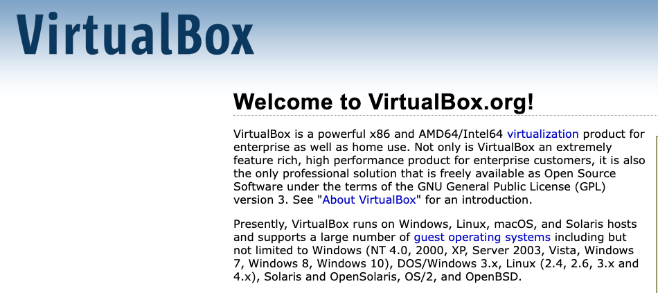
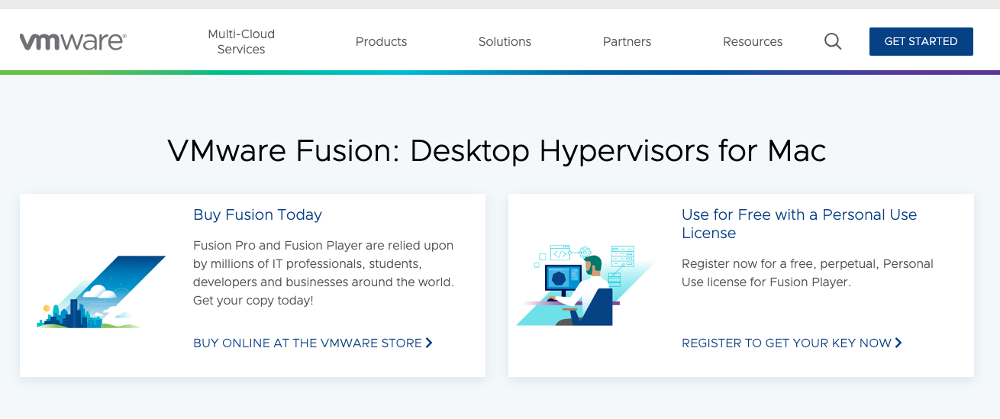
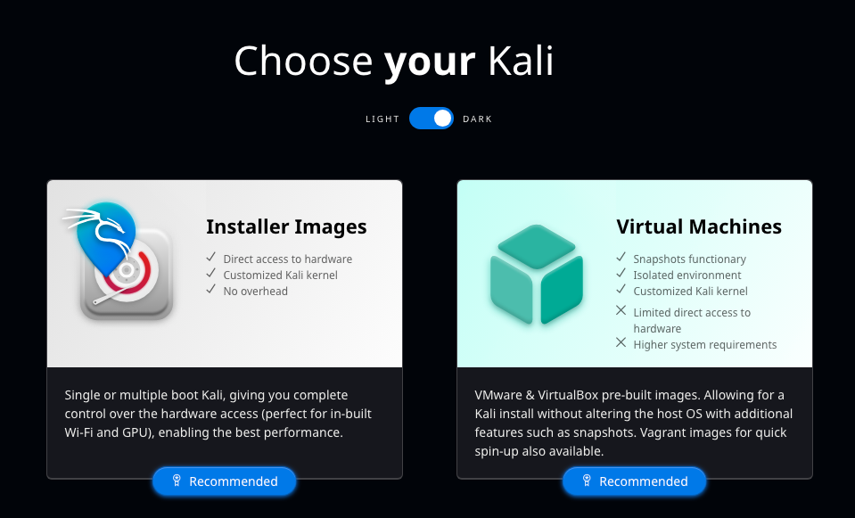
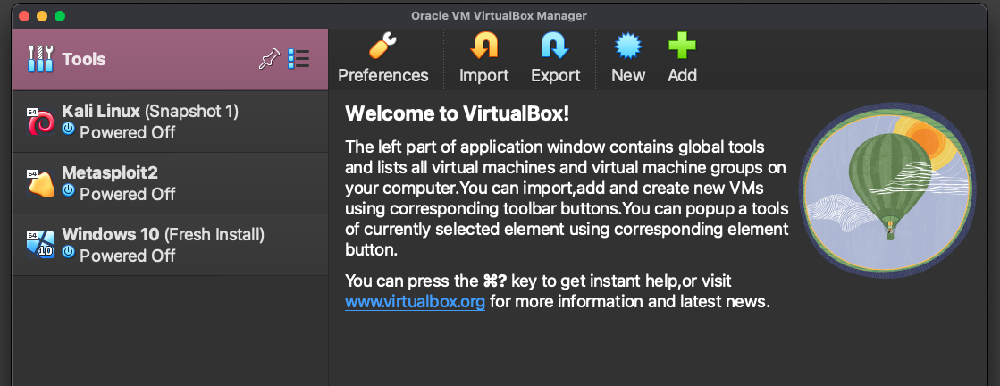
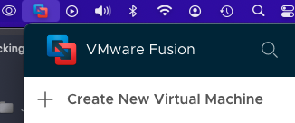
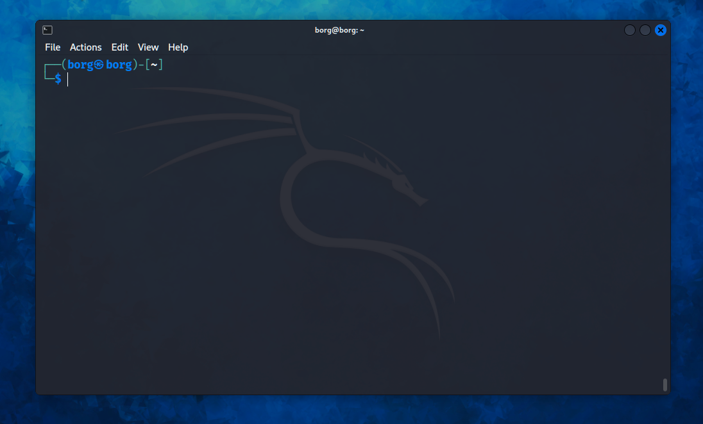
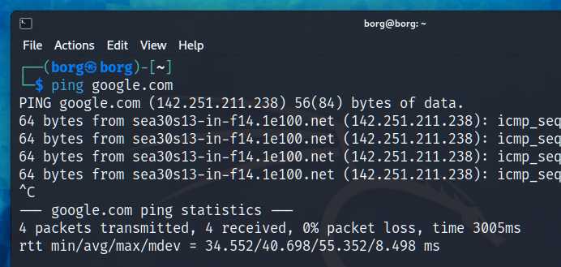
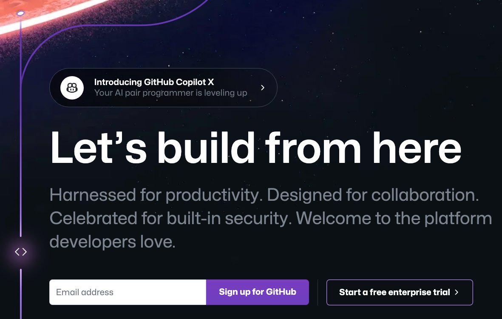

This is a post shows how to get started for Cyber Security / Ethical Hacking learning.
These are some of the things to have in order to start learning cyber security information. This will cover free resources to signup for and/or download onto your computer.
Virtual Machine (VM)
A virtual machine is a way to run another computer inside your computer you are using. If you are reading this on a Windows computer then that is called the host machine and the other computer you put inside your computer is called a hypervisor. Think of your main computer as a big box, and the VM is a smaller box inside the big box.
The hypervisor is isolated from your main computer, you can run any operating system on it, have multiple versions of it and if something goes bad, you can restart a new one. One thing to remember when you install a VM is that it thinks it is the only computer around, it has no idea about being inside a Windows or Apple computer.
The VM I suggest for beginners is VirualBox, Link here . This is usually what everyone suggests anyway as their first VM to learn on. On Youtube has videos on how to install VirtualBox, so there is no need to go over it here.

If you want to use another VM and are using an Apple computer then VMware is one I really like using. There are many products VMware offers but the one you want to select is the VM Fusion for personal use. The personal use you will need to make an account to get the access key which means you get to use it for free. The Link here.

Installing VMware is pretty straightforward, but in either VM, you can allow the computer to use default settings for disk space as it can be changed later in the settings. You can delete a VM and start again.
Linux OS
Linux operating system you want to install on your VM is Kali Linux as a starter. Easy to find, search “kali linux” and get to kali.org, click on download button.
Select the Installer Images. This will download a .iso file, which is what you will search for each and every time you want to install a OS on your virtual machine.

Open your VirtualBox or VMware and click on new.

VMware icon on top menu bar on MacOS

The select the .iso file from your downloads folder. Name the VM after the OS it is. Start up the machine (will take a few minutes to boot up), enter your username and password. Launch the terminal, the black square with white border on the top menu bar.

To test if you have internet connection, type ping google.com and you should start seeing information load on the terminal. To stop the ping Ctrl + C.

Okay, you have a connection to the internet on a virtual machine.
GitHub
If you are not familiar with GitHub, it is a website that stores and hosts programming software repositories. The “git” is the software the sends data to a website from the terminal. This is the website where people share their code with the world, or just place their code in a private repository. Much of the Free Open Source Software community is on this platform and is a great place to search for programming materials.
The Link is here for your free account. Note, there is also GitLab which requires a different username and password but works similarly.

You can host your own blog on GitHub or place your code on GitHub and then have Netlify etc. host your blog or whatever program you make. It is worthwhile getting used to GitHub as you will likely search for cyber security software and resources from here. You can find people to follow and see what projects they are working on, getting involved is always appreciated.
- GitHub is the website you put your code and share it
Code Editor
Every cyber security / ethical hacker uses a code editor, because you will be interacting with code and even writing your own code. Learning a programming language is another reason you need a code editor to practice what you are learning.
For learning a programming language on your regular computer then the code editor is really up to you on what one to go with. Some of the options are:
- VS Code, has many extensions and themes
- Sublime text editor
- Atom
- Notepad++
For cyber security / hacking inside your VM, then it is best to stick with bare bones editors. Bare bones editors are ones that come installed with Linux like nano and Vim, these are light on the demnds of the computer.
Inside your terminal, type nano newfile.txt which will open nano and then you start typing in the text file, press Cmd + S, and then Cmd + X to exit (instructions on bottom of terminal). Note: this will open and create ‘newfile.txt’ whereever your present working directory is.
Linux Crash Course
In order to get anywhere in cyber security, programming or hacking is to know the Linux essentials of navigating through the file system. This information applies to Apple users as Apple is based off of Unix, so in a Mac computer with the terminal you can apply most of Linux commands.
Here is a crash course, but you will greatly benefit from further learning. Note: folder and directory is being used interchangeably. All of these commands are typed in the terminal.
pwdmeans present working directory, this shows what files and folders are inside the folder directory you are at. If you have a file “desk.png”, and you are located at the desktop directory, you will see “desk.png” listed.lsmeans list the things in thepwdcdmeans change directory, if you are in the home directory but want to go to the Download folder, you typecd Download/.sudo apt install <package>sudo means super user do, which is the command to run things as root (as admin) which requires a password (you will not see your password being typed, no ’*’ shown). This command installs the package you name.sudo apt updaterun this command to update all software packages on your linux VM or OS, you should get in a habit of running this every time you start the machine.sudo apt upgraderun this command for similar reason above, you want to ensure you stay uup to date on Linux packages.man <command>man means manual, it is the instructions for how to use a command, if you want to know more about ‘pwd’ you typeman pwdand you will get a guide on how it works.<program> -hor--helpis how to get help on how to use a program function. Example hashcat , typehashcat -hcd ~this command takes you to your home directory, it will list Documents, Downloads, Pictures, etc. Wherever you are in the file system, this command will take you home (yep, a pun).
Here is a tip, you often just need to type part of the word for a directory or file and hit tab for it to autocomplete. If autocomplete is not working then it is an indication you are in the wrong directory or the path is wrong.
We covered:
- Virtual Machines
- Kali Linux
- GitHub
- Code Editor
- Linux Crash Course
This hopefully this was helpful to you and gets you ready for all the learning ahead.